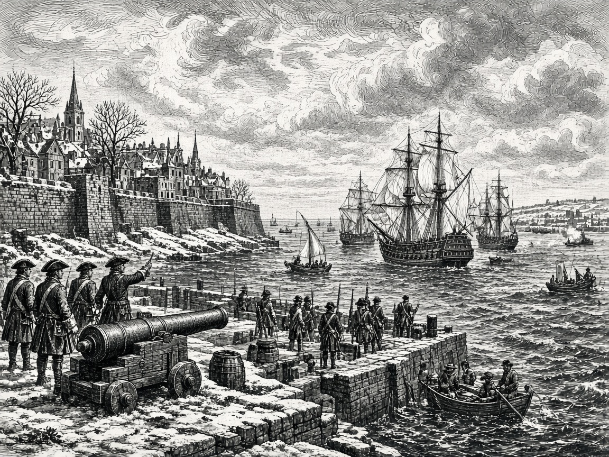

スルガが青海と開戦 紅峰全滅、銀嶺は現代都市失う
休刊中の第193期から第196期をまとめて伝える 宣戦の連鎖、一つの公国の終わり、港への艦砲

【総合部】第193期から第195期まで休刊していた本紙は、第196期までの四期をこの合同号で報じる。四期のあいだに、スルガと青海の開戦、紅峰公国の滅亡、銀嶺侯国の都市陥落が相次いだ。第196期には、スルガが第191期に予告したとおり青海共和国との戦争を開始した。スルガは連邦軍、青海は同盟軍の盟主であり、両国の開戦は陣営間の対立を深める。詳報は2面。
紅峰が全滅 銀嶺の現代都市はあろあろ領に
第195期、なのです主義人民共和国が紅峰公国の残る軍港と首都ローテンホルンを占領し、紅峰公国は全滅した。第193期以降、なのです主義人民共和国が占領を重ね、四期目に公国の全領土を掌握した。第196期には橙原自治共和国の現代都市晴穗（44,54）もなのです領となり、資金十六億円が略奪された。あろあろ国は銀嶺侯国の現代都市リヴァルジェント（76,30）を占領した。詳報は3面・4面。
第194期にはカペレナ王国が藍岬共和国連邦と開戦し、第195期には翠湖自治州がカペレナと開戦した。藍岬沿岸にはカペレナとオリョルッル王国の艦砲が続き、第196期には翠湖がオリョルッルへも宣戦した（201期開戦）。四期の火災は六十四件、人口減は約二十五万人。弾薬相場は十一・二三まで下がった。